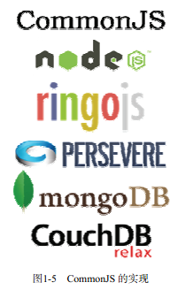

Node.js 并不是第一个尝试使 JavaScript 运行在浏览器之外的项目。追根溯源，在 JavaScript 诞生之初，网景公司就实现了服务端的 JavaScript ，但由于需要支付一大笔授权费 用才能使用，服务端 JavaScript 在当年并没有像客户端 JavaScript 一样流行开来。真正使大 多数人见识到 JavaScript 在服务器开发威力的，是微软的 ASP。
2000年左右，也就是 ASP 蒸蒸日上的年代，很多开发者开始学习 JScript 。然而 JScript 在 当时并不是很受欢迎，一方面是早期的 JScript 和 JavaScript 兼容较差，另一方面微软大力推 广的是 VBScript，而不是 JScript。随着后来 LAMP 的兴起，以及Web 2.0 时代的到来，Ajax 等一系列概念的提出，JavaScript 成了前端开发的代名词，同时服务端 JavaScript 也逐渐被人 遗忘。
——————————① WebKit 是苹果公司在设计 Safari 时开发的浏览器引擎，起源于 KHTML 和 KJS 项目的分支。WebKit 包含了一个 网页引擎 WebCore 和一个脚本引擎 JavaScriptCore ，但由于 JavaScript 引擎越来越独立，WebKit 逐渐成为了 WebCore 的代名词。
直至几年前，JavaScript 的种种优势才被重新提起，JavaScript 又具备了在服务端流行的 条件，Node.js 应运而生。与此同时，RingoJS 也基于 Rhino 实现了类似的服务端 JavaScript 平 台，还有像 CouchDB、MongoDB 等新型非关系型数据库也开始用 JavaScript 和 JSON 作为 其数据操纵语言，基于 JavaScript 的服务端实现开始遍地开花。
正如当年为了统一 JavaScript 语言标准，人们制定了 ECMAScript 规范一样，如今为了 统一 JavaScript 在浏览器之外的实现，CommonJS 诞生了。CommonJS 试图定义一套普通应 用程序使用的API，从而填补 JavaScript 标准库过于简单的不足。CommonJS 的终极目标是 制定一个像 C++ 标准库一样的规范，使得基于 CommonJS API 的应用程序可以在不同的环 境下运行，就像用 C++ 编写的应用程序可以使用不同的编译器和运行时函数库一样。为了 保持中立，CommonJS 不参与标准库实现，其实现交给像 Node.js 之类的项目来完成。图1-5 是 CommonJS 的各种实现。
 图1-5 CommonJS 的实现CommonJS 规范包括了模块（modules）、包（ packages ）、系统（ system ）、二进制（ binary ）、 控制台（console）、编码（encodings）、文件系统（filesystems ）、套接字（sockets ）、单元测 试（unit testing ）等部分。目前大部分标准都在拟定和讨论之中，已经发布的标准有 Modules/1.0、Modules/1.1、Modules/1.1.1、Packages/1.0、System/1.0。
Node.js 是目前 CommonJS 规范最热门的一个实现，它基于 CommonJS 的 Modules/1.0 规 范实现了 Node.js 的模块，同时随着 CommonJS 规范的更新，Node.js 也在不断跟进。由于目 前 CommonJS 大部分规范还在起草阶段，Node.js 已经率先实现了一些功能，并将其反馈给 CommonJS 规范制定组织，但 Node.js 并不完全遵循 CommonJS 规范。这是所有规范制定者 都会遇到的尴尬局面，因为规范的制定总是滞后于技术的发展。